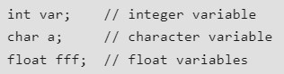
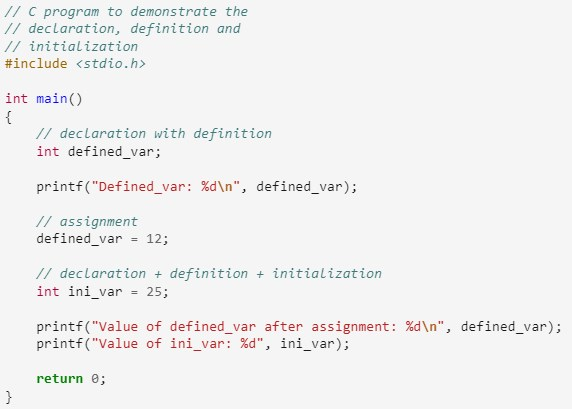
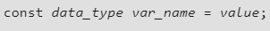

Getting started with C
C Variables
A variable in C language is the name associated with some memory location to store data of different types. There are many types of variables in C depending on the scope, storage class, lifetime, type of data they store, etc.
A variable is the basic building block of a C program that can be used in expressions as a substitute in place of the value it stores.
What is a variable in C?
A variable in C is a memory location with some name that helps store some form of data and retrieves it when required. We can store different types of data in the variable and reuse the same variable for storing some other data any number of times.
They can be viewed as the names given to the memory location so that we can refer to it without having to memorize the memory address. The size of the variable depends upon the data type it stores.
C Variable Syntax
The syntax to declare a variable in C specifies the name and the type of the variable.
- data_type: Type of data that a variable can store.
- variable_name: Name of the variable given by the user.
- value: value assigned to the variable by the user.
Example
3 Aspects of defining a variable
- Variable Declaration
- Variable Definition
- Variable Definition
Variable Declaration
Variable declaration in C tells the compiler about the existence of the variable with the given name and data type.When the variable is declared, an entry in symbol table is created and memory will be allocated at the time of initialization of the variable.
C Variable Definition
In the definition of a C variable, the compiler allocates some memory and some value to it. A defined variable will contain some random garbage value till it is not initialized.
Example
C Variable Initialization
Initialization of a variable is the process where the user assigns some meaningful value to the variable when creating the variable.
Example
How to use variables in C?
Example
Output
Rules for Naming Variables in C
- A variable name must only contain alphabets, digits, and underscore.
- A variable name must start with an alphabet or an underscore only. It cannot start with a digit.
- No white space is allowed within the variable name.
- A variable name must not be any reserved word or keyword.
Example
C Variable Types
- Local Variables
- Global Variables
- Static Variables
- Automatic Variables
- Extern Variables
- Register Variables
Local Variables in C
A Local variable in C is a variable that is declared inside a function or a block of code. Its scope is limited to the block or function in which it is declared.
Example
Output
In the above code, x can be used only in the scope of function(). Using it in the main function will give an error.
Global Variable in C
A Global variable in C is a variable that is declared outside the function or a block of code. Its scope is the whole program i.e. we can access the global variable anywhere in the C program after it is declared.
Example
Output
In the above code, both functions can use the global variable as global variables are accessible by all the functions.
Static Variables in C
A static variable in C is a variable that is defined using the static keyword. It can be defined only once in a C program and its scope depends upon the region where it is declared (can be global or local).
The default value of static variables is zero.
Syntax of Static Variable in C
As its lifetime is till the end of the program, it can retain its value for multiple function calls as shown in the example.
Example
Output
In the above example, we can see that the local variable will always print the same value whenever the function will be called whereas the static variable will print the incremented value in each function call.
Automatic Variable in C
All the local variables are automatic variables by default. They are also known as auto variables.
Their scope is local and their lifetime is till the end of the block. If we need, we can use the auto keyword to define the auto variables.
The default value of the auto variables is a garbage value.
Syntax of Auto Variable in C
Example
Output
In the above example, both x and y are automatic variables. The only difference is that variable y is explicitly declared with the auto keyword.
External Variables in C
External variables in C can be shared between multiple C files. We can declare an external variable using the extern keyword.
Their scope is global and they exist between multiple C files.
Syntax of Extern Variables in C
Example
In the above example, x is an external variable that is used in multiple C files.
Register Variables in C
Register variables in C are those variables that are stored in the CPU register instead of the conventional storage place like RAM. Their scope is local and exists till the end of the block or a function.
These variables are declared using the register keyword.The default value of register variables is a garbage value.
Syntax of Register Variables in C
Example
Output
Constants in C
The constants in C are the read-only variables whose values cannot be modified once they are declared in the C program. The type of constant can be an integer constant, a floating pointer constant, a string constant, or a character constant. In C language, the const keyword is used to define the constants.
In this article, we will discuss about the constants in C programming, ways to define constants in C, types of constants in C, their properties and the difference between literals and constants.
How to Define Constant in C?
We define a constant in C language using the const keyword. Also known as a const type qualifier, the const keyword is placed at the start of the variable declaration to declare that variable as a constant.
Syntax to define constant
Example
Output
Types of Constants in C
- Integer Constant
- Character Constant
- Floating Point Constant
- Double Precision Floating Point Constant
- Array Constant
- Structure Constant
Properties of Constants in C
- Initialization with Declaration
- Immutability
We can only initialize the constant variable in C at the time of its declaration. Otherwise, it will store the garbage value.
The constant variables in c are immutable after its definition, i.e., they can be initialized only once in the whole program. After that, we cannot modify the value stored inside that variable.
Data Types In C
Each variable in C has an associated data type. It specifies the type of data that the variable can store like integer, character, floating, double, etc. Each data type requires different amounts of memory and has some specific operations which can be performed over it.
Types
- Integer Data Type
- Character Data Type
- Float Data Type
- Double Data Type
- Void Data Type
Integer Data Type
The integer datatype in C is used to store the integer numbers (any number including positive, negative and zero without decimal part). Octal values, hexadecimal values, and decimal values can be stored in int data type in C.
- Range: -2,147,483,648 to 2,147,483,647
- Size: 4 bytes
- Format Specifier: %d
Character Data Type
Character data type allows its variable to store only a single character. The size of the character is 1 byte. It is the most basic data type in C. It stores a single character and requires a single byte of memory in almost all compilers.
- Range: (-128 to 127) or (0 to 255)
- Size: 1 byte
- Format Specifier: %c
Float Data Type
In C programming float data type is used to store floating-point values. Float in C is used to store decimal and exponential values. It is used to store decimal numbers (numbers with floating point values) with single precision.
- Range: 1.2E-38 to 3.4E+38
- Size: 4 bytes
- Format Specifier: %f
Double Data Type
A Double data type in C is used to store decimal numbers (numbers with floating point values) with double precision. It is used to define numeric values which hold numbers with decimal values in C.
The double data type is basically a precision sort of data type that is capable of holding 64 bits of decimal numbers or floating points. Since double has more precision as compared to that float then it is much more obvious that it occupies twice the memory occupied by the floating-point type. It can easily accommodate about 16 to 17 digits after or before a decimal point.
- Range: 1.7E-308 to 1.7E+308
- Size: 8 bytes
- Format Specifier: %lf
Void Data Type
The void data type in C is used to specify that no value is present. It does not provide a result value to its caller. It has no values and no operations. It is used to represent nothing. Void is used in multiple ways as function return type, function arguments as void, and pointers to void.